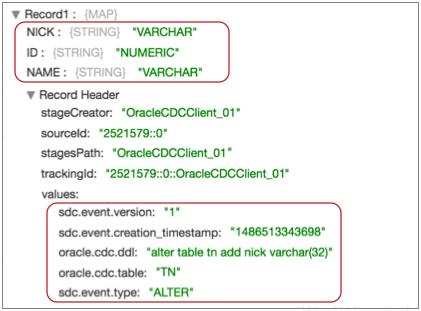

Oracle CDC Client
The Oracle CDC Client processes change data capture (CDC) information provided by Oracle LogMiner redo logs. Use Oracle CDC Client to process data from Oracle 11g or 12c.
You might use this origin to perform database replication. You can use a separate pipeline with the JDBC Query Consumer or JDBC Multitable Consumer origin to read existing data. Then start a pipeline with the Oracle CDC Client origin to process subsequent changes.
Oracle CDC Client processes data based on the commit number, in ascending order.
To read the redo logs, Oracle CDC Client requires the LogMiner dictionary. The origin can use the dictionary in redo logs or in an online catalog. When using the dictionary in redo logs, the origin captures and adjusts to schema changes. The origin can also generate events when using redo log dictionaries.
The origin can create records for the INSERT, UPDATE, SELECT_FOR_UPDATE, and DELETE operations for one or more tables in a database. You can select the operations that you want to use. The origin also includes CDC and CRUD information in record header attributes so generated records can be easily processed by CRUD-enabled destinations. For an overview of Data Collector changed data processing and a list of CRUD-enabled destinations, see Processing Changed Data.
When you configure Oracle CDC Client, you configure change data capture details, such as the schema and tables to read from, how to read the initial change, the dictionary source location, and the operations to include. You also specify the transaction window and LogMiner session windows to use.
You can configure the origin to buffer records locally or to use database buffers. Before using local buffers, verify that the required resources are available and specify the action to take for uncommitted transactions.
You can specify the behavior when the origin encounters an unsupported data type, and you can configure the origin to pass null values when it receives them from supplemental logging data.
You also specify JDBC connection information and user credentials. If the schema was created in a pluggable database, state the pluggable database name. You can configure custom properties that the driver requires.
You can configure advanced connection properties. To use a JDBC version older than 4.0, you specify the driver class name and define a health check query.
When concerned about performance, as when processing very wide tables, you can consider several alternatives to the default origin behavior. You can use the alternate PEG parser or use multiple threads for parsing. Or, you can configure the origin to not parse SQL query statements so you can pass the query to the SQL Parser processor to be parsed.
LogMiner Dictionary Source
LogMiner provides dictionaries to help process redo logs. LogMiner can store dictionaries in several locations.
- Online catalog - Use the online catalog when table structures are not expected to change.
- Redo logs - Use redo logs when table structures are expected to change. When
reading the dictionary from redo logs, the Oracle CDC Client origin determines
when schema changes occur and refreshes the schema that it uses to create
records. The origin can also generate events for each DDL it reads in the redo
logs. Important: When using the dictionary in redo logs, make sure to extract the latest dictionary to the redo logs each time table structures change. For more information, see Task 4. Extract a Log Miner Dictionary (Redo Logs).
Note that using the dictionary in redo logs can have significantly higher latency than using the dictionary in the online catalog. But using the online catalog does not allow for schema changes.
For more information about dictionary options and configuring LogMiner, see the Oracle LogMiner documentation.
Oracle CDC Client Prerequisites
- Enable LogMiner.
- Enable supplemental logging for the database or tables.
- Create a user account with the required roles and privileges.
- To use the dictionary in redo logs, extract the Log Miner dictionary.
- Install the Oracle JDBC driver.
Task 1. Enable LogMiner
LogMiner provides redo logs that summarize database activity. The origin uses these logs to generate records.
- Log into the database as a user with DBA privileges.
- Check the database logging
mode:
select log_mode from v$database;If the command returns ARCHIVELOG, you can skip to Task 2.
If the command returns NOARCHIVELOG, continue with the following steps:
- Shut down the database:
shutdown immediate; - Start up and mount the database:
startup mount; - Configure enable archiving and open the
database:
alter database archivelog; alter database open;
Task 2. Enable Supplemental Logging
To retrieve data from redo logs, LogMiner requires supplemental logging for the database or tables.
Enable at least primary key or "identification key" logging at a table level for each table that you want to use. With identification key logging, records include only the primary key and changed fields.
Due to an Oracle known issue, to enable supplemental logging for a table, you must first enable minimum supplemental logging for the database.
- To verify if supplemental logging is enabled for the database, run the following
command:
SELECT supplemental_log_data_min, supplemental_log_data_pk, supplemental_log_data_all FROM v$database;If the command returns Yes or Implicit for all three columns, then supplemental logging is enabled with both identification key and full supplemental logging. You can skip to Task 3.
If the command returns Yes or Implicit for the first two columns, then supplemental logging is enabled with identification key logging. If this is what you want, you can skip to Task 3.
- Enable identification key or full supplemental logging. For 12c multitenant databases, best practice is to enable logging for the container for the tables, rather than the entire database. You can use the following command first to apply the changes to just the container:You can enable identification key or full supplemental logging to retrieve data from redo logs. You do not need to enable both:
ALTER SESSION SET CONTAINER=<pdb>;- To enable identification key logging
- You can enable identification key logging for individual tables or all tables in the database:
- To enable full supplemental logging
- You can enable full supplemental logging for individual tables or all tables in the database:
- To submit the changes:
ALTER SYSTEM SWITCH LOGFILE;
Task 3. Create a User Account
Create a user account to use with the Oracle CDC Client origin. You need the account to access the database through JDBC.
- Oracle 12c multitenant databases
- For multitenant Oracle 12c databases, create a common user account. Common
user accounts are created in cdb$root and must use the convention:
c##<name>. - Oracle 12c standard databases
- For standard Oracle 12c databases, create a user account with the necessary
privileges:
- Log into the database as a user with DBA privileges.
- Create the user
account:
CREATE USER <user name> IDENTIFIED BY <password>; GRANT create session, alter session, select any dictionary, logmining, execute_catalog_role TO <user name>; GRANT select on <db>.<table> TO <user name>;Repeat the final command for each table that you want to use.
- Oracle 11g databases
- For Oracle 11g databases, create a user account with the necessary
privileges:
- Log into the database as a user with DBA privileges.
- Create the user
account:
CREATE USER <user name> IDENTIFIED BY <password>; GRANT create session, alter session, execute_catalog_role, select any dictionary, select any transaction, select any table to <user name>; GRANT select on v$logmnr_parameters to <user name>; GRANT select on v$logmnr_logs to <user name>; GRANT select on v$archived_log to <user name>; GRANT select on <db>.<table> TO <user name>;Repeat the final command for each table that you want to use.
Task 4. Extract a Log Miner Dictionary (Redo Logs)
When using redo logs as the dictionary source, you must extract the Log Miner dictionary to the redo logs before you start the pipeline. Repeat this step periodically to ensure that the redo logs that contain the dictionary are still available.
Oracle recommends that you extract the dictionary only at off-peak hours since the extraction can consume database resources.
EXECUTE DBMS_LOGMNR_D.BUILD(OPTIONS=> DBMS_LOGMNR_D.STORE_IN_REDO_LOGS);ALTER SESSION SET CONTAINER=cdb$root;
EXECUTE DBMS_LOGMNR_D.BUILD(OPTIONS=> DBMS_LOGMNR_D.STORE_IN_REDO_LOGS);Task 5. Install the Driver
The Oracle CDC Client origin connects to Oracle through JDBC. You cannot access the database until you install the required driver.
Install the Oracle JDBC driver for the Oracle database version that you use. For information about installing additional drivers, see Install External Libraries.
Schema, Table Name and Exclusion Patterns
When you configure the Oracle CDC Client origin, you specify the tables with the change capture data that you want to process. To specify the tables, you define the schema, a table name pattern, and an optional exclusion pattern.
When defining the schema and table name pattern, you can use a regular expression to define a set of tables within a schema or across multiple schemas. When needed, you can also use a regular expression as an exclusion pattern to exclude a subset of tables from the larger set.
- Schema: sales
- Table Name Pattern: SALES*
- Exclusion Pattern: SALES.*-.
Initial Change
The initial change is the point in the LogMiner redo logs where you want to start processing. When you start the pipeline, Oracle CDC Client starts processing from the specified initial change and continues until you stop the pipeline.
Note that Oracle CDC Client processes only change capture data. If you need existing data, you might use a JDBC Query Consumer or a JDBC Multitable Consumer in a separate pipeline to read table data before you start an Oracle CDC Client pipeline.
- From the latest change
- The origin processes all changes that occur after you start the pipeline.
- From a specified datetime
- The origin processes all changes that occurred at the specified datetime and
later. Use the following format:
DD-MM-YYYY HH24:MI:SS. - From a specified system change number (SCN)
- The origin processes all changes that occurred in the specified SCN and later. When using the specified SCN, the origin starts processing with the timestamp associated with the SCN. If the SCN cannot be found in the redo logs, the origin continues reading from the next higher SCN that is available in the redo logs.
Example
You want to process all existing data in the Orders table and then capture changed data, writing all data to Amazon S3. To read the existing data, you use a pipeline with the JDBC Query Consumer and Amazon S3 destination as follows:

Once all existing data is read, you stop the JDBC Query Consumer pipeline and start the following Oracle CDC Client pipeline. This pipeline is configured to pick up changes that occur after you start the pipeline, but if you wanted to prevent any chance of data loss, you could configure the initial change for an exact datetime or earlier SCN:

Choosing Buffers
When processing data, the Oracle CDC Client can buffer data locally on the Data Collector machine or use Oracle LogMiner buffers:
- Local buffers
-
When using local buffers, the origin requests the transactions for the relevant tables and time period. The origin buffers the resulting LogMiner redo SQL statements until it verifies a commit for a transaction. After seeing a commit, it parses and processes the committed data.
The origin can buffer the redo SQL statements completely in memory or write them primarily to disk while using a small amount of memory for tracking.
By default, the origin uses local buffers. In general, using local buffers should provide better performance than Oracle Log Miner buffers.
Use local buffers to process large transactions or to avoid monopolizing the Oracle PGA. Buffer information in memory for better performance when Data Collector resources allow. Buffer information to disk to avoid monopolizing Data Collector resources.
- Oracle LogMiner buffers
- When using Oracle LogMiner buffers, the origin requests data from Oracle LogMiner for a particular time period. LogMiner then buffers all transactions for that time period for all tables in the database, rather than only the tables needed by the origin.
Local Buffer Resource Requirements
Before using local buffers, you should verify that the allocated resources are sufficient for the needs of the pipeline.
- In memory
- When buffering in memory, the origin buffers the LogMiner redo SQL statements returned by Oracle. It processes the data after receiving a commit for the statement.
- To disk
- When buffering to disk, the origin stores only the statement ID for each SQL query in memory. Then it saves the queries to disk.
For information about configuring the Data Collector heap size, see Java Heap Size.
Uncommitted Transaction Handling
When using local buffers, you can configure how the Oracle CDC Client origin handles old uncommitted transactions. Old transactions are those that are older than the current transaction window.
By default, the origin processes old committed transactions. It converts each LogMiner redo SQL statement to a record and passes the record to the stage for error handling.
If you don't need the error records, you can configure the origin to discard uncommitted transactions. This also reduces the overhead used to generate the error records.
Include Nulls
When the Oracle LogMiner performs full supplemental logging, the resulting data includes all columns in the table with null values where no changes occurred. When the Oracle CDC Client processes this data, by default, it ignores null values when generating records.
You can configure the origin to include the null values in the record. You might need to include the null values when the destination system has required fields. To include null values, enable the Include Nulls property on the Oracle CDC tab.
Unsupported Data Types
You can configure how the origin handles records that contain unsupported data types. The origin can perform the following actions:
- Pass the record to the pipeline without the unsupported data types.
- Pass the record to error without the unsupported data types.
- Discard the record.
You can configure the origin to include the unsupported data types in the record. When you include unsupported types, the origin includes the field names and passes the data as unparsed strings.
- Array
- Blob
- Clob
- Datalink
- Distinct
- Java Object
- Nclob
- Other
- Ref
- Ref Cursor
- SQLXML
- Struct
- Time with Timezone
Conditional Data Type Support
- The Oracle Raw data type is treated as a Data Collector Byte Array.
- The Oracle Timestamp with Timezone data type is converted to the Data Collector Zoned Datetime data type. To maximize efficiency while providing more precision, the origin includes only the UTC offset with the data. It omits the time zone ID.
Generated Records
When the origin is configured to parse the SQL query, it generates records differently based on the Oplog operation type and the logging enabled for the database and tables. It also includes CDC and CRUD information in record header attributes.
| Oplog Operation | Identification/Primary Key Logging Only | Full Supplemental Logging |
|---|---|---|
| INSERT | All fields that contain data, ignoring fields with null values. | All fields. |
| UPDATE | Primary key field and fields with updated values. | All fields. |
| SELECT_FOR_ UPDATE | Primary key field and fields with updated values. | All fields. |
| DELETE | Primary key field. | All fields. |
When the origin is configured to not parse the SQL query, it simply writes each LogMiner SQL statement to a SQL field.
CRUD Operation Header Attributes
- sdc.operation.type
- The Oracle CDC Client evaluates the Oplog operation type associated with each entry that it processes and, when appropriate, it writes the operation type to the sdc.operation.type record header attribute.
- oracle.cdc.operation
- The Oracle CDC Client also writes the Oplog CRUD operation type to the oracle.cdc.operation record header attribute. This attribute was implemented in an earlier release and is supported for backward compatibility.
CDC Header Attributes
- oracle.cdc.operation
- oracle.cdc.query
- oracle.cdc.rowId
- oracle.cdc.scn
- oracle.cdc.timestamp
- oracle.cdc.table
- oracle.cdc.user
- jdbc.<fieldname>.precision
- jdbc.<fieldname>.scale
You can use the record:attribute or record:attributeOrDefault functions to access the information in the attributes. For more information about working with record header attributes, see Working with Header Attributes.
Event Generation
The Oracle CDC Client origin can generate events that you can use in an event stream when the origin uses redo logs as the dictionary source. The origin does not generate events when using the online catalog as the dictionary source.
When you use redo logs as the dictionary source and enable event generation, the Oracle CDC Client generates events when it reads DDL statements. It generates events for ALTER, CREATE, DROP, and TRUNCATE statements.
When you start the pipeline, the origin queries the database and caches the schemas for all tables listed in the origin, and then generates an initial event record for each table. Each event record describes the current schema for each table. The origin uses the cached schemas to generate records when processing data-related redo log entries.
The origin then generates an event record for each DDL statement it encounters in the redo logs. Each event record includes the DDL statement and the related table in record header attributes.
The origin includes table schema information in the event record for new and updated tables. When the origin encounters an ALTER or CREATE statement, it queries the database for the latest schema for the table.
If the ALTER statement is an update to a cached schema, the origin updates the cache and includes the updated table schema in the event record. If the ALTER statement is older than the cached schema, the origin does not include the table schema in the event record. Similarly, if the CREATE statement is for a "new" table, the origin caches the new table and includes the table schema in the event record. Because the origin verifies that all specified tables exist when the pipeline starts, this can occur only when the table is dropped and created after the pipeline starts. If the CREATE statement is for a table that is already cached, the origin does not include the table schema in the event record.
- With the Email executor to send a custom email
after receiving an event.
For an example, see Case Study: Sending Email.
- With a destination to store event information.
For an example, see Case Study: Event Storage.
For more information about dataflow triggers and the event framework, see Dataflow Triggers Overview.
Event Records
| Record Header Attribute | Description |
|---|---|
| sdc.event.type | Event type. Uses one of the following types:
|
| sdc.event.version | An integer that indicates the version of the event record type. |
| sdc.event.creation_timestamp | Epoch timestamp when the stage created the event. |
| oracle.cdc.table | Name of the Oracle database table that changed. |
| oracle.cdc.ddl | The DDL statement that triggered the event. |
DROP and TRUNCATE event records include just the record header attributes listed above.
CREATE event records include the schema for the new table when the table has been dropped and recreated. ALTER event records include the table schema when the statement updates a cached schema. For more information about the behavior for CREATE and ALTER statements, see Event Generation.
For example, the following ALTER event record displays the three fields in an updated schema - NICK, ID, and NAME:

In the list of record header attributes, notice the DDL statement that added the NICK field, the name of the updated table, and the ALTER event type.
PEG Parser (Beta)
The Oracle CDC Client origin provides an alternate PEG parser that you can try when concerned about pipeline performance.
The Oracle CDC Client origin provides a PEG parser as an alternate to the default parser. You can try the PEG parser when you feel that performance with the default parser is inadequate, as when processing very wide tables. Note that the PEG parser is in beta at this time and should be carefully tested before use in production.
For more information about PEG processing, see https://en.wikipedia.org/wiki/Parsing_expression_grammar.
To use the PEG parser, enable the Use PEG Parser property on the Advanced tab.
Multithreaded Parsing
When you configure the origin to use local buffering and to parse the SQL query, you can configure the Oracle CDC Client origin to use multiple threads to parse transactions. You can use multithreaded parsing with both the default Oracle CDC Client parser and the alternate PEG parser.
When performing multithreaded parsing, the origin uses multiple threads to generate records from committed SQL statements in a transaction. It does not perform multithreaded processing of the resulting records.
The Oracle CDC Client origin uses multiple threads for parsing based on the Parse Thread Pool Size property. When you start the pipeline, the origin creates the number of threads specified in the property. The origin connects to Oracle, creates a LogMiner session, and processes a single transaction at a time.
When the origin processes a transaction, it reads and buffers all SQL statements in the transaction to an in-memory queue and waits for statements to be committed before processing them. Once committed, the SQL statements are parsed using all available threads and the original order of the SQL statements is retained.
The resulting records are passed to the rest of the pipeline. Note that enabling multithreaded parsing does not enable multithreaded processing – the pipeline uses a single thread for reading data.
Working with the SQL Parser Processor
For very wide tables, those with hundreds of columns, reading the redo logs and parsing the SQL query using the Oracle CDC Client origin may take longer than expected and can cause the Oracle redo logs to be rotated out before they are read. When this happens, data is lost.
To avoid this, you can use multiple pipelines and the SQL Parser processor. The first pipeline contains the Oracle CDC Client and an intermediate endpoint. Configure the origin to not parse the SQL query. The second pipeline passes records from the intermediate endpoint to the SQL Parser processor to both parse the SQL query and to update the fields. Using this approach, the origin can read the redo logs without waiting for the SQL Parser to finish and therefore no data is lost.
- Reads the change data logs.
- Generates records that contain only the SQL query.
- Generates events.
- Parses the SQL query.
- Generates CDC and CRUD record header attributes.
For more information about the SQL Parser processor, see SQL Parser.
Working with the Drift Synchronization Solution
If you use the Oracle CDC Client origin as part of a Drift Synchronization Solution for Hive pipeline, make sure to pass only records flagged for Insert to the Hive Metadata processor.
- Configure the Oracle CDC Client to process only Insert records.
- If you want to process additional record types in the pipeline, use a Stream Selector to route only Insert records to the Hive Metadata processor.
Data Preview with Oracle CDC Client
When using data preview with the Oracle CDC Client origin, you might need to increase the Preview Timeout data preview property.
By default, data preview waits 10,000 milliseconds, 10 seconds, to establish a connection to the origin system before timing out. Due to the complex nature of this origin, the initial startup can take longer than the default.
If data preview times out, try increasing the timeout property to 120,000 milliseconds. If preview continues to time out, increase the timeout incrementally.
Configuring an Oracle CDC Client
Configure an Oracle CDC Client origin to process LogMiner change data capture information from an Oracle database.
Before you use the origin, complete the prerequisite tasks. For more information, see Oracle CDC Client Prerequisites.
-
In the Properties panel, on the General tab, configure
the following properties:
General Property Description Name Stage name. Description Optional description. Produce Events 
When the origin uses redo logs as the dictionary source, can generate event records when the origin reads DDL statements. Use for event handling. On Record Error 
Error record handling for the stage: - Discard - Discards the record.
- Send to Error - Sends the record to the pipeline for error handling.
- Stop Pipeline - Stops the pipeline.
-
On the Oracle CDC tab, configure the following change data
capture properties:
Change Data Capture Property Description Tables Tables to track. Specify related properties as needed. Using simple or bulk edit mode, click the Add icon to define another table configuration.
Schema Name Schema to use. You can enter a schema name or use SQL LIKE syntax to specify a set of schemas. The origin submits the schema name in all caps by default. To use a lower or mixed-case name, enable the Case-Sensitive Names property.
Table Name Pattern A table name pattern that specifies the tables to track. You can enter a table name or use SQL LIKE syntax to specify a set of tables.
The origin submits table names in all caps by default. To use lower or mixed-case names, enable the Case-Sensitive Names property.Exclusion Pattern An optional table exclusion pattern to define a subset of tables to exclude. You can enter a table name or use a regular expression to specify a subset of tables to exclude. Case-Sensitive Names Enables using case-sensitive schema, table, and column names. When not enabled, the origin submits names in all caps. Oracle uses all caps for schema, table, and column names by default. Names can be lower- or mixed-case only if the schema, table, or column was created with quotation marks around the name.
Initial Change The starting point for the read. Use one of the following options: - From Latest Change - Processes changes that arrive after you start the pipeline.
- From Date - Processes changes starting from the specified date.
- From SCN - Processes changes starting from the specified system change number (SCN).
Start Date The datetime to read from when you start the pipeline. For a date-based initial change. Use the following format:
DD-MM-YYYY HH24:MI:SS.Start SCN The system change number to start reading from when you start the pipeline. If the SCN cannot be found in the redo logs, the origin continues reading from the next higher SCN that is available in the redo logs. For an SCN-based initial change.
Operations Operations to include when creating records. All unlisted operations are ignored. Dictionary Source Location of the LogMiner dictionary: - Redo logs - Use when schemas can change. Allows the origin to adapt to schema changes and to generate events for DDL statements.
- Online catalog - Use for better performance when schemas are not expected to change.
Buffer Changes Locally Determines the buffers that the origin uses. Select to use local Data Collector buffers. Clear to use Oracle LogMiner buffers. Generally, using local buffers will enhance pipeline performance. By default, the origin uses local buffers.
Buffer Location Determines which local buffers are used: - In memory
- To disk
Before running the pipeline, note the local buffer resource requirements. For more information, see Local Buffer Resource Requirements.
Discard Old Uncommitted Transactions Discards older uncommitted transactions rather than processing them into error records. Unsupported Field Type Determines the behavior when the origin encounters unsupported data types in the record: - Ignore and Send Record to Pipeline - The origin ignores unsupported data types and passes the record with only supported data types to the pipeline.
- Send Record to Error - The origin handles the record based on the error record handling configured for the stage. The error record contains only the supported data types.
- Discard Record - The origin discards the record.
For a list of unsupported data types, see Unsupported Data Types.
Add Unsupported Fields to Records Includes fields with unsupported data types in the record. Includes the field names and the unparsed string values of the unsupported fields. Include Nulls Includes null values in records generated from full supplemental logging that include null values. By default, the origin generates a record without null values. Maximum Transaction Length Time in seconds to wait for changes for a transaction. Enter the longest period of time that you expect a transaction to require. Default is ${ 1 * HOURS } which is 3600 seconds.
LogMiner Session Window Time in seconds to keep a LogMiner session open. Set to larger than the maximum transaction length. Reduce when not using local buffering to reduce LogMiner resource use. Default is ${ 2 * HOURS } which is 7200 seconds.
JDBC Fetch Size Minimum number of records to fetch before passing a batch to the pipeline. Keep this value low to allow the origin to pass records to the pipeline as soon as possible, rather than waiting for a larger number of records to become available. Lower values can increase throughput when writes to the destination system are slow.
Default is 1.
Parse SQL Query Determines whether to parse SQL queries. If set to false, the origin writes the SQL query to a “sql” field that can be parsed later by the SQL Parser processor.
The default is true, meaning the origin parses the SQL queries.
Send Redo Query in Headers Includes the LogMiner redo query in the oracle.cdc.query record header attribute. DB Time Zone Time zone of the database. Specify when the database operates in a different time zone from Data Collector. -
On the Advanced tab, optionally configure advanced
properties.
The defaults for these properties should work in most cases:
Advanced Property Description Use PEG Parser (beta) Enables use of the beta PEG parser instead of the default Oracle CDC Client origin parser. Can improve performance, but should be carefully tested before use in production. Parse Thread Pool Size Number of threads that the origin uses for multithreaded parsing. Available only when performing local buffering and parsing the SQL query. Can be used with both the default parser and PEG parser.
Maximum Pool Size The maximum number of connections to create. Default is 1. The recommended value is 1.
Minimum Idle Connections The minimum number of connections to create and maintain. To define a fixed connection pool, set to the same value as Maximum Pool Size. Default is 1.
Connection Timeout Maximum time to wait for a connection. Use a time constant in an expression to define the time increment. Default is 30 seconds, defined as follows:${30 * SECONDS}Idle Timeout Maximum time to allow a connection to idle. Use a time constant in an expression to define the time increment. Use 0 to avoid removing any idle connections.
Default is 30 minutes, defined as follows:${30 * MINUTES}Max Connection Lifetime Maximum lifetime for a connection. Use a time constant in an expression to define the time increment. Use 0 to avoid removing any idle connections.
Default is 30 seconds, defined as follows:${30 * SECONDS}Enforce Read-only Connection Creates read-only connections to avoid any type of write. Default is enabled. Disabling this property is not recommended.
Transaction Isolation Transaction isolation level used to connect to the database. Default is the default transaction isolation level set for the database. You can override the database default by setting the level to any of the following:
- Read committed
- Read uncommitted
- Repeatable read
- Serializable